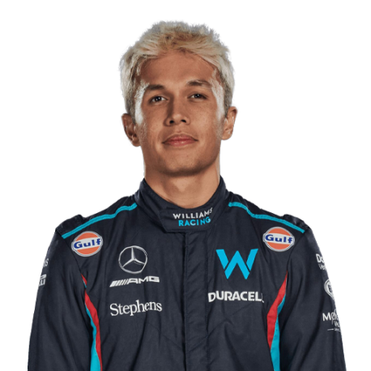
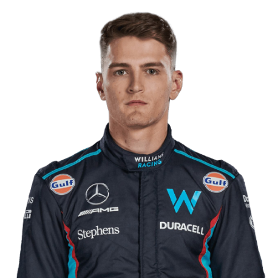

Team
Meet the team.
Team Principal

James Vowels
Drivers

Alex Albon

Logan Sargent

Meet the team.
James Vowels
Alex Albon
Logan Sargent
Williams entered a custom March 761 for the 1977 season, with Patrick Neve driving the team's lone entry starting from the Spanish Grand Prix. The Belgian driver failed to score a point, his best finish being seventh in Italy.
Jones was joined by Clay Regazzoni as Williams opted to field two cars in 1979. The Swiss driver almost claimed the outfit's debut win in Monaco, but finished less than a second behind race winner Jody Scheckter. That elusive first victory finally came at Williams' home race, the British Grand Prix, with Regazzoni finishing 25 seconds clear of the field.
Jones and Reutemann scored four wins between them in the following year and, while both drivers finished behind champion Piquet in the Drivers' standings, Williams took the Constructors' Championship over Brabham. Jones retired in 1982, and was replaced by Keke Rosberg who had failed to score a point the previous year. Nevertheless, the Finn claimed the title despite only winning one race that season in Switzerland.
Williams continued to use Ford power except for the final race in South Africa in 1983, and the full-time switch to Honda the following year proved unsuccessful. Rosberg won the Dallas Grand Prix with the FW09, but the team finished the year sixth with 25.5 points. Now running with the yellow, blue and white Canon livery that stayed with the team until 1993, Head designed the FW10 in 1985 that used the carbon-fibre composite technology that McLaren pioneered. Nigel Mansell partnered Rosberg, with both drivers winning two races each to help Williams to finish third in the Constructors' Championship.
Piquet secured Williams-Honda's only Drivers' Championship the following year in 1987, with the Brazilian winning three races and finishing 15 points ahead of teammate Mansell in the standings. Although Williams took another Constructors' title, Honda opted to end their partnership in favour of a return to McLaren, as well as continuing with Lotus.
Mansell won the first five races of the 1992 season and didn't look back from there, as the Williams FW14B proved to be too much for the rest of the grid. He finished the year with nine victories, becoming the first driver to achieve this in a single F1 season, while also becoming the first Briton to win the championship since James Hunt in 1976. Teammate Patrese finished second in the standings, a full 52 points back.
The Williams FW15C proved to be a class above, thanks to active suspension and traction control systems that were beyond what other teams had. Prost won his debut race for the team in South Africa, finishing a minute ahead of Senna. The Frenchman took victory in seven of the opening 10 races, while Hill won the other three, though Williams failed to win any of the final six races. As a result, Prost clinched the title by 26 points over Senna, who overtook Hill in the standings, whilst Williams cruised to an easy Constructors' title.
Prost's veto powers on the other Williams seat were only valid for the 1993 season, and as a result Senna was signed for 1994. Soon after the news, the Frenchman announced his retirement from motorsport.Senna took pole at the opening two races, but failed to finish either of them, with Schumacher winning both. The season took on a different dynamic at Round 3 in San Marino, as the Brazilian took pole once again but was involved in a fatal crash on Lap 6. At the following race in Monaco, the team ran one car as a mark of respect to Senna.
Coulthard became Hill's full-time teammate in 1995, but Williams were not able to match the Benetton-Renault pairing. Schumacher won nine of the 17 races, and took the championship by 33 points over Hill. While the two Williams drivers finished the year second and third in the standings with a combined five wins, it wasn't enough to deny Benetton the Constructors' Championship. While the German would only win one race during his two seasons with Williams, Villeneuve battled it out with Schumacher - now at Ferrari - for the 1997 title. Williams claimed their 100th win at the British Grand Prix, but Schumacher entered the final race of the season in Jerez with a one-point lead on Villeneuve. The two drivers collided on Lap 48, with the FIA later deeming the incident avoidable and disqualifying Schumacher from the championship, while Williams took a third consecutive Constructors' Championship.
2005, 2006
Alan Jones X1 1980, Keke Rosberg X1 1982, Nelson Piquet X1 1987 Nigel Mansell X1 1992, Alain Prost X1 1993, Damon Hill X1 1996, Jacques Villeneuve X1 1997